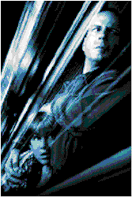
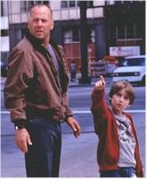

Contents | Features | Reviews | Books | Archives | Store |
 |
|
| Movie Credits | Buy It! |
Mercury Rising
Review by Elias Savada
Posted 20 March 1998
|  | Directed by Harold Becker Starring
Bruce Willis, Alec Baldwin, Miko Hughes, Screenplay by Lawrence Konner and Mark Rosenthal, |
Imagine Entertainment changed the title from Mercury Falling during production of this dull and predictable action picture. Unfortunately, title changes don't always help and this indifferent star vehicle follows that notion, as it will head south to video in much the same manner as Willis' Fifth Element and The Jackal deep-sixed themselves last year. It's a cross between Witness (replace an Amish youngster with an autistic child) and Willis' despondent, renegade John McClane character (replace a gung-ho New York detective with a veteran hard-edged FBI agent). It doesn't work ... at all. Call it Witless or call it Die Hardly. Even the ending draws directly from the latter in how it ultimately deals with the big bad guy.
Angering by the mishandling of a militant hostage situation by his superiors, outcast G-man Art Jeffries (Willis) spends the rest of the movie flashing back to two dead teens who died as he was working undercover in a pre-credit sequence reminiscent of the Ruby Ridge fiasco. While Jeffries is demoted to mindless wiretapping stakeouts, nine-year-old learning disabled Simon Lynch, only child and soon to be orphan of a modest Chicago blue collar family, is hunted by the NSA, the secretive and omnipotent government agency attempting to hide the boy's ability to decipher a hidden, top secret super-code (the titular Mercury) stuck in the centerfold of a World of Puzzles magazine. NSA grunts Dean Crandell (Robert Stanton) and Leo Pedranski (Bodhi Pine Elfman), who placed the word puzzle to filter out the "geek" factor in the two billion dollar code – which protects covert U.S. espionage operations around the world – are berated and given a failing grade by their zealous superior, the over-patriotic Lt. Col. Nicholas Kudrow (Alec Baldwin), an over-the-top and one-dimensional character that reeks of Ollie North. Willis and Baldwin don't appear in many scenes together (much like Al Pacino and Robert De Niro in 1995's Heat), but one that got a chuckle from the audience occurs in Kudrow's trendy Washington, DC, wine cellar with Jeffries making throw-away comments tasting several uncorked vintages while he gives his misguided adversary a tactical ultimatum before trashing a prized wine rack. Guess it was a bad year.
It's strictly cat-and-mouse, with Kudrow's lynchmen, including a presumed-dead special forces mercenary, Peter Burrell (L.L Ginter), chasing Jeffries and the boy all over Chicago. As quickly as Jeffries kills off each NSA henchmen, the secret agency manages to cover its nefarious tracks, picking up its dead agents before anyone notices. At the same time it spreads misinformation on Jeffries, making him a wanted man among his cohorts and forcing him to coerce shoe saleswoman Stacey (Kim Dickens, getting more screen presence in a smaller role after a great performance in Jake Kasdan's Zero Effect), with his manly charms and openness, enlisting her support in saving the child. Peter Stormare, who showed us his novel use of a wood-chipper in Fargo, has a brief (less than two minutes!) appearance before being dispatched to the railbed of the Chicago Transit Authority.
Chicago-born actor Chi McBride (a four-year regular on The John Larroquette Show) portrays FBI agent Tommy "Bizzi" Jordan, Jeffries' only friend in the world. (Hey Jeffries, get a life!) It's the only character that half-way hops off the screen. He did the same thing last year when he appeared as the garrulous Illinois Gordon in the dreadful Hoodlum opposite Lawrence Fishburne.
For all the movement between Chicago and Washington, there's not much in the way of story and acting. It's a script-by-number painted with a brush too wide. Director Harold Becker had the same problem with City Hall, and here muddles through from one scene to the next with no glue to connect. And this has to be one of the worst photographed films I've seen in years. It's too dark and you can barely see the cast in many of the scenes, almost as if this was a unanswered work print. Strange, as director of photography Michael Seresin (a Becker collaborator 25 years ago with The Ragman's Daughter and more recently with City Hall) is often associated with some of the better work of director Alan Parker (Midnight Express, Fame). Guess he's been out in the sun too long. I know that at a running time of nearly two hours, I was in the theater too long – nearly two hours too long.
Contents | Features | Reviews | Books | Archives | Store
Copyright © 1999 by Nitrate Productions, Inc. All Rights Reserved.